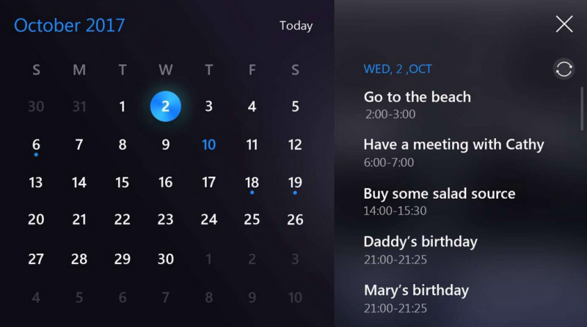
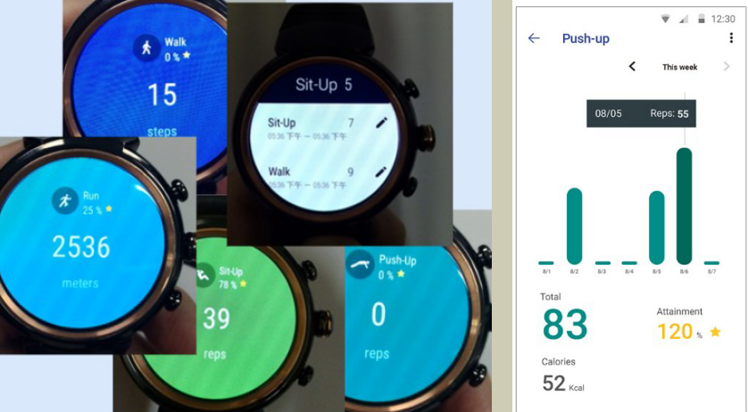
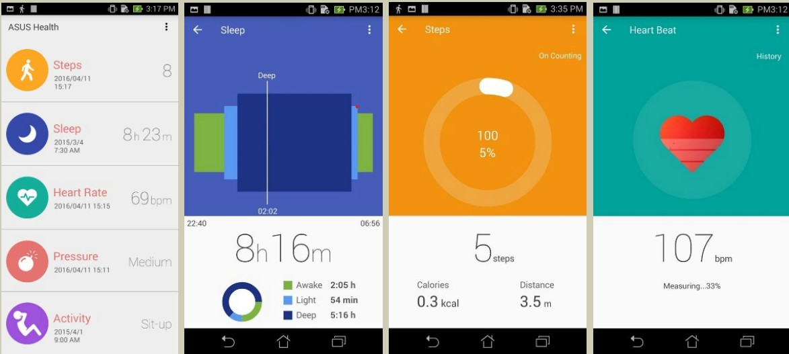
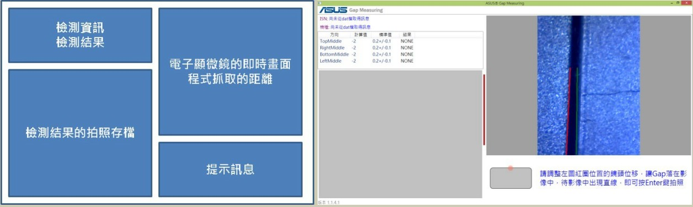

Aug. 5th 2012 - Oct. 4th 2018
ASUS DualScreen (POC)
Skill: C++, Win32, C#, UWP, DAC
- Hook Win32 events to create new features on the second screen of laptop.
Skill: C++, Win32, UWP, DAC
- Implemented a Calendar
plugin, which supports events sync with third party calendars.

- Localization support for other plugins.
ZenMotion library
Skill: C++, Android JNI, Java
- Encapsulated new algorithm on JNI.
- Designed and developed an app for testing the new algorithm.
Android Fitness Tracker (POC)
Skill: Java, Android SDK, SQLite
With Android watch and handheld device, the app can help users to track his/her
activities like walk, run, push-up, sit-up and so on. What I designed and
implemented are,
- Synchronize data between the watch and the handheld through Bluetooth by
multiple threading.
- Save / retrieve persistent data to / from SQLite.
- UI/UX of watch.

ASUS GiftBox
Skill: RWD, Bootstrap, html/css, javascript, ASP.net MVC, IIS 7.5,
Entity Framework, Linq to SQL, JSON, C#, SQL server, AppFabric ( for Cache server ),
Google Analytics and its API
ASUS GiftBox is a web based system, which provides software promotion to clients.
I'm responsible for maintaining and developing the frontend and backend of the ASUS
GiftBox website.
Contribution: Help ASUS to earn cash flow from more than 380,000 user clicks
on the promotion apps.
Several sub tasks I developed are listed below.
- Backend: When getting the request from the frontend app, I queried data from
database and then sent JSON data to the app.
- ASUS GiftBox Website v1 (frontend)

- ASUS GiftBox Website v2 (frontend)
GameVisual
Skill: C#, WPF, MVVM
It only took me 5 days to implement the HD and 4K UI of the application.

Health Platform (POC)
Skill: Java, Android SDK, SQLite
The Health Platform app helps users to measure their heart rate, step count and
sleep quality. I implemented UI and integrated several body measurement algorithms
into the app.

Email Newsletter for Adobe
Skill: Dreamweaver, Html, inline-css, C# and Excel API
Developed an email newsletter app for Adobe. The app helps Adobe to send email
newsletters to their clients.
Contribution: Asus had a cooperation plan with Adobe. The email newsletter
encourages ASUS clients to buy Adobe products with promotion, which made ASUS earn
more than USD $3300 income.
ASUS Gap Measuring
Skill: WPF, C#, OpenCV, C/C++, Registry, JSON, XML, INI files,
Software anti-piracy
Designed and developed a tool used for measuring the gap distance on ASUS laptops
in the factory.

Sensor test tool for MediaTek wearable
Skill: C, MediaTek LinkIt SDK
Developed a test tool on the MediaTek bare board for collecting the sensor data
from human activities.
Android Test on Dual OS
Skill: Ubuntu Linux, Java, Android SDK, Android OS framework
Developed an Android app for testing different aspects between the Windows and
Android OS switches.
ASUS USB Charger Plus
Skill: C++, WMI, Win32
Maintained the application for upgrade. Using debug tools to find any problem on
hardware, software or driver.
Photo Album
Skill: C#, Windows 8 metro, C++, OpenCV
Designed and developed a WinRT app, which provides users to browse and edit photos.
Some interesting features in the app are 1. Photos folders in a tree structure are
all moved into the first level, so users can see all the photo folders at the very
first time. 2. Using some optimization methods and algorithm for speeding up
browsing through large photos set.